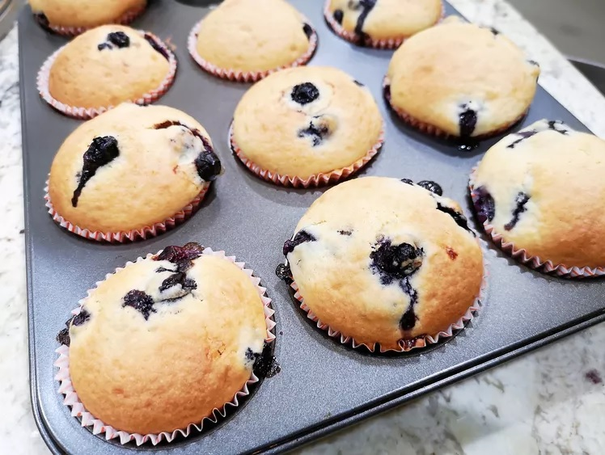

HOMEPAGE
Muffins

Description
These basic muffins can be made as-is, or you can add one of several different ingredients for a variety of
muffins. All
options are delicious!
Ingridients
-
2 cups all-purpose flour
-
3 teaspoons baking powder
-
½ teaspoon salt
-
¾ cup white sugar
-
1 egg
-
1 cup milk
-
¼ cup vegetable oil
Steps
-
Step 1
Preheat the oven to 400 degrees F (200 degrees C). Grease a 12-cup muffin tin or line cups with paper
liners.
-
Step 2
Stir flour, baking powder, salt, and sugar together in a large bowl; make a well in the center.
-
Step 3
Beat egg with a fork in a small bowl or 2-cup measuring cup; whisk in milk and oil. Pour egg mixture all at
once into
flour mixture; mix quickly and lightly with a fork until just moistened. The batter will be lumpy. (Fold in
additional
ingredients if using; see variations below). Spoon batter into the prepared muffin cups, filling each 3/4
full.
-
Step 4
Bake in the preheated oven until tops spring back when lightly pressed, about 25 minutes.